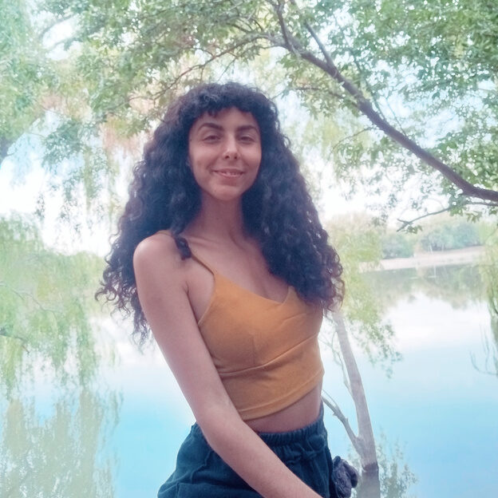
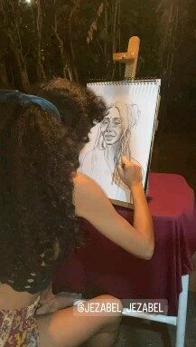
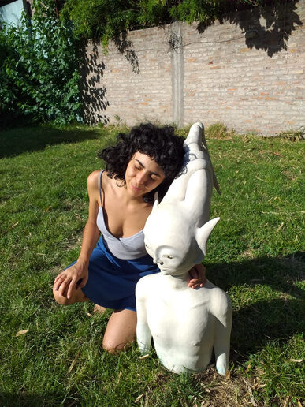
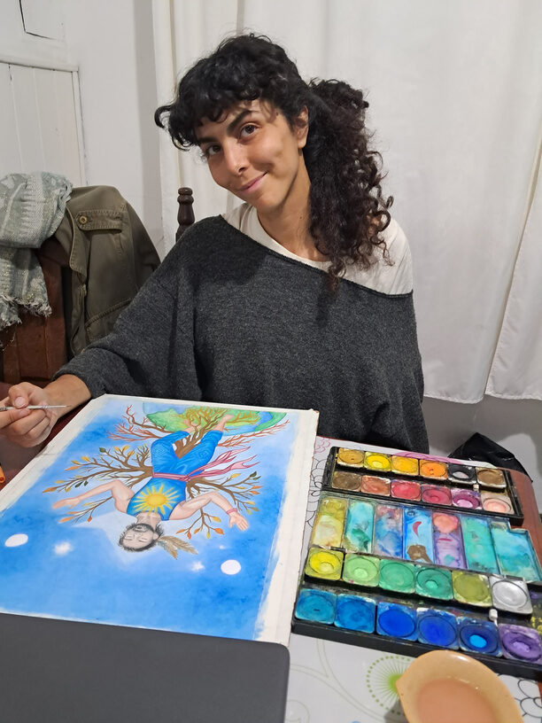
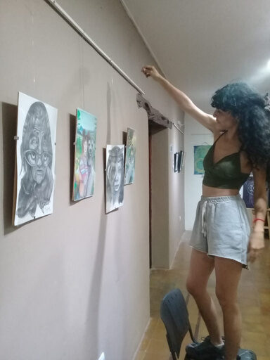

Sobre mí

Soy Jezabel, profesora de Artes Visuales con orientación en Cerámica. Me dedico al dibujo, la pintura y la artesanía.
Mi especialidad son los retratos, el realismo y los universos mágicos.

Mi pasión es la textura de lo manual, sumergirme en los detalles finos y en la creación de trazos inspirados en la naturaleza onírica, orgánica y misteriosa.
Utilizo diversas técnicas: grafito, acuarelas, óleos, etc.
Trabajo en proyectos editoriales, discográficos, arte personal, encargos y colaboraciones.
Hablo español, inglés y portugués.

Formación
- Dibujo, pintura, arte impreso, vitrofusión, cobre esmaltado, escultura y cerámica en UNAV.
- Técnica superior en cerámica y profesorado en Artes Visuales en IMCAEV.


Experiencia
- Docente de terciarios y talleres particulares.
- Proyectos artísticos, colaboraciones y encargos personalizados.
- Exposiciones y pintura en vivo.